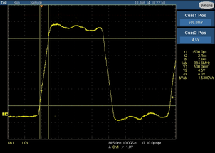

HV protection - Impact on rise time example
The clamp diodes, the additional conductive tracks, pads, and vias will decrease the maximum usable frequency and degrade the waveform quality a little.
| Test instrument: | PS1600 channel |
| Test voltages: | VIH = 5.0 V VIL = 0.0 V |
| Measurements: | Rise time measured with oscilloscope |
| First measurement: | Rise time measurement directly at the open pogo pin |
| Second measurement: | Rise time measurement directly at the same pogo pin with high-voltage protection circuitry connected |
Result
The left picture below shows the output signal of the PS1600 channel at the first measurement. The right picture shows the signal of the second measurement with the high-voltage protection circuitry connected.

The rise time is increased by 0.3 ns if the protection circuit is connected.
Functional changes
- Introduced in SmarTest 7.3.1